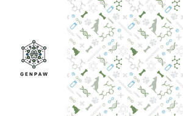

Trade Mark Journal No.2025/032 8 August 2025
UK00004226144 28 June 2025 (1,3,5,6,7,8,9,10,11,12,14,18,20,21,22,24,27,28,29,31,35,39,40,41,42,43,44,45)

- Class 1
- Animal manure; Animal charcoal; Charcoal (Animal -); Animal carbon; Animal extracts for the food industry; Substances for tanning animal skins; Albumin [animal or vegetable, raw material]; Enzymes [other than for medical or veterinary use]; Inoculants [other than for medical or veterinary use]; Chemicals for use in thermography [other than medical or veterinary]; Bactericides [other than for medical and veterinary use]; Cultures, other than for medical or veterinary use; Chemicals for use in analysis [other than medical and veterinary]; Chemicals for use in pathology [other than medical and veterinary]; Diagnostic chemicals [other than for medical or veterinary use]; Bacteria [other than for medical or veterinary purposes]; Chemicals for use in immuno-assay testing [other than medical or veterinary]; Bacteriological cultures [other than for medical and veterinary use]; Bacterial products [other than for medical and veterinary use]; Clinical diagnostics, other than for medical or veterinary use; Bacterial preparations other than for medical and veterinary use; Bacterial preparations other than for medical or veterinary use; Bacterial preparations, other than for medical and veterinary use; Bactericidal preparations [other than for medical and veterinary use]; Bacteriological preparations other than for medical and veterinary use; Bacteriological preparations, other than for medical and veterinary use; Cultures of cell media [other than for medical or veterinary use]; Viruses, other than for medical and veterinary purposes; Adjuvants, other than for medical or veterinary purposes; Chemicals for use in chromatography [other than medical and veterinary]; Diagnostic preparations, except for medical or veterinary use; Chemicals for use in science [other than medical or veterinary]; Chemical test reagents [other than medical or veterinary]; Chemicals for use in separation [other than medical or veterinary]; Growth promoters [other than for medical or veterinary use].
- Class 3
- Animal grooming preparations; Deodorants for human beings or for animals; Shampoos for pets; Pets (Shampoos for -); Deodorants for pets; Pet shampoos; Shampoos for pets [non-medicated grooming preparations].
- Class 5
- Animal repellents; Animal sperm; Attractants for pet animals; Animal washes; Veterinary vaccines for bovine animals; Animal flea collars; Cement for animal hooves; Hooves (Cement for animal -); Medicated animal feed; Insecticidal animal shampoos; Animal repellent formulations; Deodorants, other than for human beings or for animals; Diapers for pets; Vitamins for pets; Anti-flea collars for pets; Medicated shampoos for pets; Antiparasitic preparations for pets; Disposable housebreaking pads for pets; Dietary supplements for pets; Sanitary pants for pets; Dietary pet supplements in the form of pet treats; Repellents for dogs; Dogs (Repellents for -); Veterinary vaccines; Antibiotics for veterinary use; Dog lotions for veterinary purposes; Ferments for medical or veterinary use; Veterinary preparations; Veterinary preparations for treatment of intestinal bacteria; Pain relief medication for veterinary purposes; Reactants for veterinary diagnosis; Bacterial preparations for medical and veterinary use; Feed supplements for veterinary use; Disinfectants for veterinary use; Yeast for medical, veterinary or pharmaceutical purposes; Food supplements for veterinary use; Greases for medical or veterinary purposes; Moleskin for use as a medical bandage; Radioactive preparations veterinary diagnosis; Diagnostic preparations for medical and veterinary use; Nutritional supplements for veterinary use; Bacteriological preparations for medical and veterinary use; Medicines for veterinary purposes; Cultures for veterinary use; Medical foodstuff additives for veterinary use; Antibiotics.
- Class 6
- Animal traps (Metal -) for wild animals.
- Class 7
- Animal shearing machines.
- Class 8
- Dog clippers.
- Class 9
- Sunglasses for pets; Life jackets for pets.
- Class 10
- Lice combs for pets; X-ray film mounts for veterinary use; Bandages [supportive] for veterinary use; X-ray film holders for veterinary use; Elizabethan collars for veterinary use; Pliers for veterinary use; Tubes for veterinary use; X-ray apparatus for veterinary use; X-ray film frames for veterinary use; Electrocardiographs for veterinary use; Ultrasound apparatus for veterinary use; Veterinary obstetric aids for use in the birth of live animals; Tools for veterinary diagnostics; Gloves for veterinary use; Pumps for veterinary use; Elizabethan collars for veterinary purposes.
- Class 11
- Cooling mats for pets.
- Class 12
- Vehicles for animal transport; Pushchairs for pets; Pet strollers.
- Class 14
- Jewelry for pets; Jewellery for pets; Pet jewelry.
- Class 18
- Animal skins; Skins (Animal -); Animal leashes; Animal apparel; Animal hides; Animal harnesses; Animal covers; Animal leads; Animal skins, hides; Animal skins and hides; Collars for pets; Clothing for pets; Pets (Clothing for -); Garments for pets; Raincoats for pet dogs; Clothing for domestic pets; Leashes for animals; Pet clothing; Bags for carrying pets; Electronic pet collars; Dog leashes; Collars for cats; Clothing for dogs; Dog coats; Dog collars.
- Class 20
- Animal hooves; Hooves (Animal -); Animal horns; Horns (Animal -); Claws (Animal -); Animal claws; Animal teeth; Stuffed animals in the nature of taxidermy; Animals (Stuffed -); Stuffed animals; Animal housing and beds; Kennels for household pets; Beds for pets; Playhouses for pets; Beds for household pets; Grooming tables for pets; Portable beds for pets; Pet houses; Pet crates; Pet furniture; Non-metal safety gates for babies, children, and pets; Pet grooming tables; Nesting boxes for household pets; Household pets (Nesting boxes for -); Pet cushions; Cushions (Pet -); Nesting boxes for pets; Dog kennels; Inflatable pet beds; Dog houses [kennels]; Barrels (Non-metallic -) for the identification of pet animals; Kennels.
- Class 21
- Animal activated animal feeders; Animal traps; Animal activated livestock feeders; Animal activated livestock waterers; Non-mechanized animal feeders; Animal grooming gloves; Small animal feeders; Wild animal repellent devices, not of metal; Cages for pets; Cages for household pets; Pets (Cages for household -); Toothbrushes for pets; Brushes for pets; Trays (Litter -) for pets; Litter trays for pets; Litter trays for pet animals; Food containers for pet animals; Litter boxes for pets; Cages for carrying pets; Litter scoops for use with pet animals; Feeding vessels for pets; Brushes for grooming pet animals; Wire cages for household pets; De-shedding combs for pets; Deshedding brushes for pets; Deshedding combs for pets; Automatic litter boxes for pets; Pet feeding dishes; Pet feeding bowls; Litter boxes [trays] for pets; Pets (Litter boxes [trays] for -); Pet lick mats; Pet paw cleaners, non-electric.
- Class 22
- Animal hair; Animal feeding nets; Rope for use in toys for pets.
- Class 24
- Fabric imitating animal skins; Fabric of imitation animal skins; Fabric of imitation animal skin; Blankets for household pets.
- Class 27
- Pet feeding mats.
- Class 28
- Toys for pet animals; Toy animals; Toys for pets; Toys for domestic pets; Pet toys; Toys and playthings for pets; Toys and playthings for pet animals; Whack-a-mole toys for pets; Ball launchers for pets; Sports equipment for pets; Toys, games and playthings for pet animals; Toys for dogs; Toys for translating feelings of pets; Toys for cats; Toys for animals; Dog toys.
- Class 29
- Animal fats for food; Animal oils for food; Animal marrow for food; Marrow (Animal -) for food; Animal kidneys [offal].
- Class 31
- Animal feedstuffs; Animal food; Animal foodstuffs; Foodstuffs (Animal -); Animal embryos; Animal feed; Animal foodstuffs for the weaning of animals; Animal litter; Pet animals; Seaweed for human or animal consumption; Animal feeds; Animal biscuits; Animal beverages; Algae for human or animal consumption; Synthetic animal feed; Weeds for human or animal consumption; Animal litter for cats; Foodstuffs for pet animals; Seaweed, unprocessed, for human or animal consumption; Animal foodstuffs derived from hay; Algae, unprocessed, for human or animal consumption; Cellulose for use as animal bedding; Feedingstuffs for animals; Algae for animal consumption; Bark for use as animal litter; Animal feed preparations; Yeast for animal fodder; Paper for use as animal bedding; Food for animals; Lime for animal forage; Animal forage (Lime for -); Strengthening animal forage; Animal foodstuffs derived from vegetable matter; Linseed for animal consumption; Menagerie animals; Animals (Menagerie -); Woodshavings for use as animal bedding; Algarovilla for animal consumption; Roots for animal consumption; Flaxseed for animal consumption; Mixed animal feed; Grains for animal consumption; Yeast for animal consumption; Small animal litter; Fuller's earth for use as animal litter; Wheat proteins for animal food; Animal foodstuffs in the form of pellets; Natural rice for use as animal fodder; Woodshavings for use as animal litter; Formula animal feed; Foodstuff for animals; Forage for animals; Fish meal [animal feed]; Loose hemp for use as animal bedding; Animal foodstuffs in the form of nuts; Beverages for pets; Pet food for dogs; Pet birds; Pet foods; Pet beverages; Pet foodstuffs; Pet food for birds; Pet food; Food (Pet -); Dogs; Cats; Pets (Aromatic sand for -) [litter]; Aromatic sand for pets [litter]; Aromatic sand [litter] for pets; Food for cats; Edible silvervine powder for pet cats; Pet rabbit food; Litter for dogs; Food for dogs; Edible pet treats; Litter for animals; Edible bones and sticks for pets; Litter for cats; Beverages for cats; Beverages for dogs; Cat litters; Cat litter; Kitty litter; Dog food; Cat litter and litter for small animals; Dog foods.
- Class 35
- Maintaining a registry of animal breeds; Maintaining a registry of dog breeds.
- Class 39
- Transportation of pet animals; Pet rescue services.
- Class 40
- Dressing of animal skins.
- Class 41
- Animal dressage; Tuition for animal beauticians in animal grooming; Animal exhibitions and training of animals; Animal training; Training (Animal -); Animal shows; Animal exhibitions; Providing playgrounds for pets; Teaching of pet care in the management of pet exhibitions; Teaching of pet care in the management of pet shows; Teaching of pet care; Training in dog handling.
- Class 42
- Research relating to animal husbandry; Veterinary laboratory services.
- Class 43
- Animal boarding; Animal pound services; Boarding for pets; Services for the housing of pet birds; Dog day care services; Pet boarding services; Pet day care services; Boarding kennel services.
- Class 44
- Animal husbandry; Animal breeding; Animal grooming; Animal clipping; Animal hospitals; Care of pet animals; Stud services (Animal -); Animal beautician services for dogs; Animal beautician services for cats; Semen extraction (Animal -); Animal grooming services; Breeding of animals; Grooming of animals; Grooming of pets; Pet grooming; Grooming (Pet -); Services for the care of pet animals; Grooming salon services for pet animals; Services for the care of pet birds; Veterinary surgery; Veterinary assistance; Pet hospital services; Veterinary dentistry; Veterinary services; Cat breeding services; Dog grooming services; Veterinary surgeons' services; Pet grooming services; Veterinary surgical services; Veterinary advisory services; Breeding of dogs; Medical clinic day care services for sick children; Farrier services; X-ray technician services; Medical clinic services; Clinic (Medical -) services; Clinic services (Medical -); Advisory services relating to the care of pet animals; Breeding kennels; Grooming (Animal -); Services for the care of pet fish.
- Class 45
- Animal cruelty investigation; Animal adoption services; Microchip security services for pets; Pet sitting; Pet funeral services; Cat feeding services [in owners absence]; Pet cremation services; Dog walking services.
Gencore Labs Limited